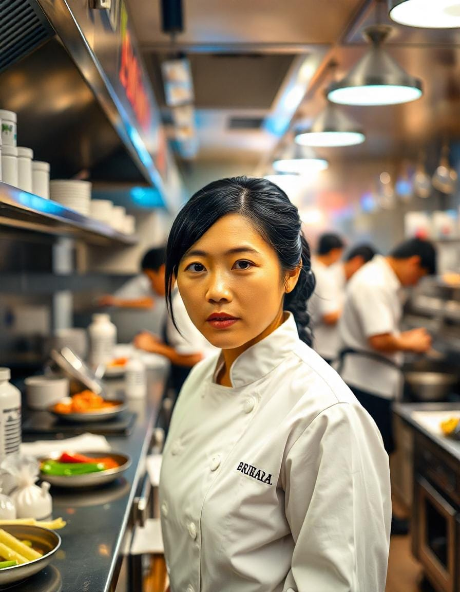
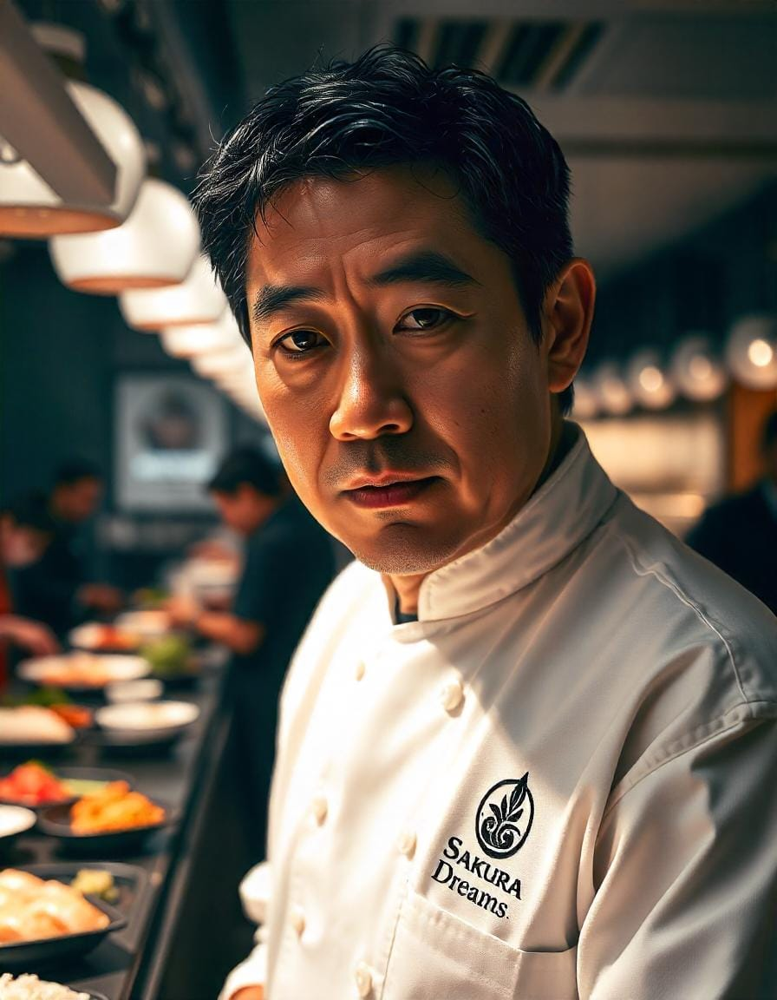
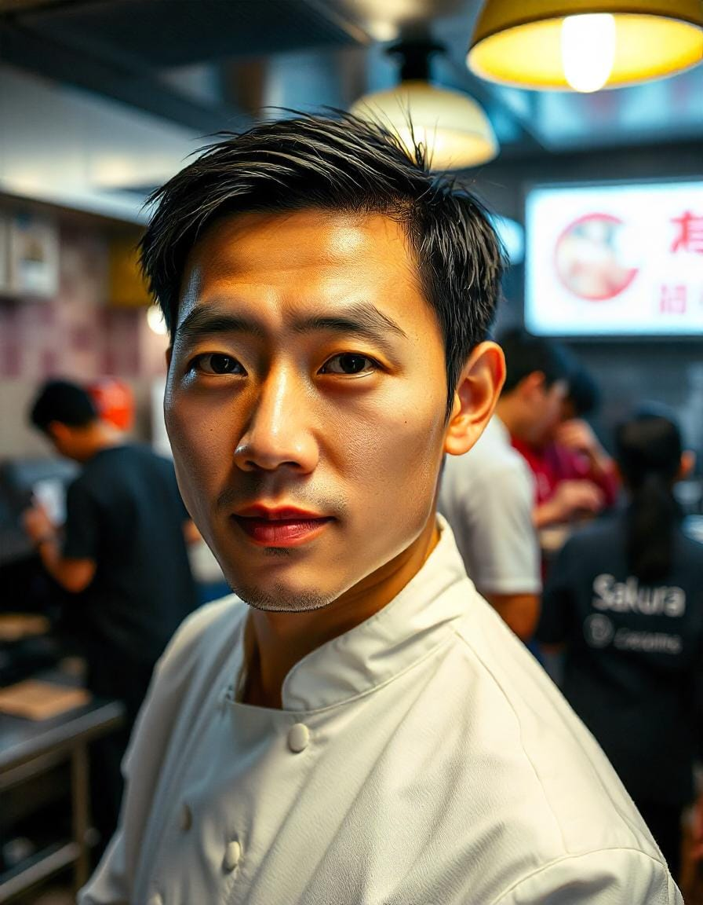

Chef Principal
Supervisa toda la cocina, el desarrollo del menú y el control de calidad.
- Nombre: Hiroshi Takahashi
- Puesto: Chef Ejecutivo

Cocinero Secundario 1
Gestiona la sección de repostería y postres, asegurando un acabado perfecto para cada comida.
- Nombre: Emiko Sato
- Puesto: Sous Chef (Pastelería y Postres)

Chef secundario 2
Lidera el equipo de sushi y garantiza los más altos estándares de preparación de sushi.
- Nombre: Kenji Nakamura
- Puesto: Jefe de cocina de sushi

Chef secundario 3
Se encarga de teppanyaki y platos a la parrilla, brindando una experiencia gastronómica interactiva.
- Nombre: Akira Tanaka
- Puesto: Especialista en Teppanyaki y Grill

Chef Secundario 4
Se centra en platos de ramen, udon y soba, brindando comodidad en cada plato.
- Nombre: Yuki Matsuda
- Puesto: Chef de ramen y fideos